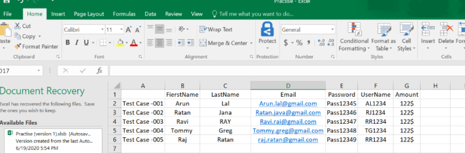
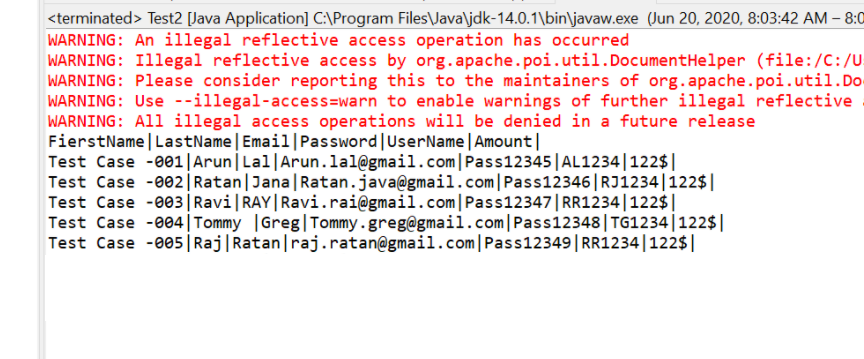

We can use XL file as test data table for Selenium to store input data as below.
Sample Excel is:"Practise.xlsx"

We are going to use POI Jar to read above Excel , we can add dependency as below :
<!-- https://mvnrepository.com/artifact/org.apache.poi/poi -->
<dependency>
<groupId>org.apache.poi</groupId>
<artifactId>poi</artifactId>
<version>3.11</version>
</dependency>
<dependency>
<groupId>org.apache.poi</groupId>
<artifactId>poi-ooxml</artifactId>
<version>3.11</version>
</dependency>
package SelJava;
import java.io.File;
import java.io.FileInputStream;
import java.util.Iterator;
import org.apache.poi.ss.usermodel.Cell;
import org.apache.poi.ss.usermodel.Row;
import org.apache.poi.xssf.usermodel.XSSFSheet;
import org.apache.poi.xssf.usermodel.XSSFWorkbook;
public class ReadXL {
public static void main(String[] args) {
// TODO Auto-generated method stub
try {
FileInputStream file = new FileInputStream(new File("C:\\Users\\userid\\Desktop\\Practise.xlsx"));
// Create Workbook instance holding reference to .xlsx file
XSSFWorkbook workbook = new XSSFWorkbook(file);
// Get first/desired sheet from the workbook
XSSFSheet sheet = workbook.getSheetAt(0);
// Iterate through each rows one by one
Iterator<Row> rowIterator = sheet.iterator();
while (rowIterator.hasNext()) {
Row row = rowIterator.next();
// For each row, iterate through all the columns
Iterator<Cell> cellIterator = row.cellIterator();
while (cellIterator.hasNext()) {
Cell cell = cellIterator.next();// Check the cell type and format accordingly
switch (cell.getCellType()) {
case Cell.CELL_TYPE_NUMERIC:
System.out.print(cell.getNumericCellValue()+"|");
break;
case Cell.CELL_TYPE_STRING:
System.out.print(cell.getStringCellValue()+"|");
break;
}
}
}
file.close();
}
catch(Exception e)
{ e.printStackTrace();}
}
}
The Test Output can be driven as below :
